Ray Tracing
Why Ray Tracing
相比于只使用光栅化，光线追踪质量较高，但是运行非常缓慢。因此，对于实时画面我们采用光栅化，对于离线画面我们使用光线追踪。
Shadow Mapping 在点光源条件下，判断某一点不在阴影中的根据为该点同时在相机和光源的视野内。
Step1 从点光源位置进行光栅化但不进行着色及之后的操作，将得到的深度结果记录；Step2 将相机视角中的某一点投影回光源的深度图像中，比较该点到光源的距离与该点在深度图中记录的深度，如果深度一致，说明该点不在阴影中；否则，在阴影中。 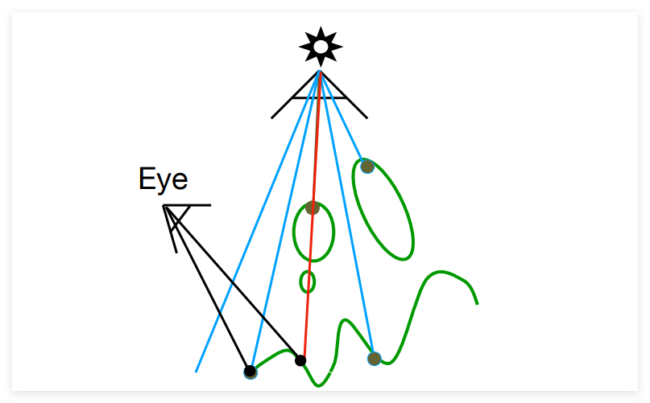
如果光源有一定大小，就会形成软阴影，阴影颜色越淡，照到上面的光越多。
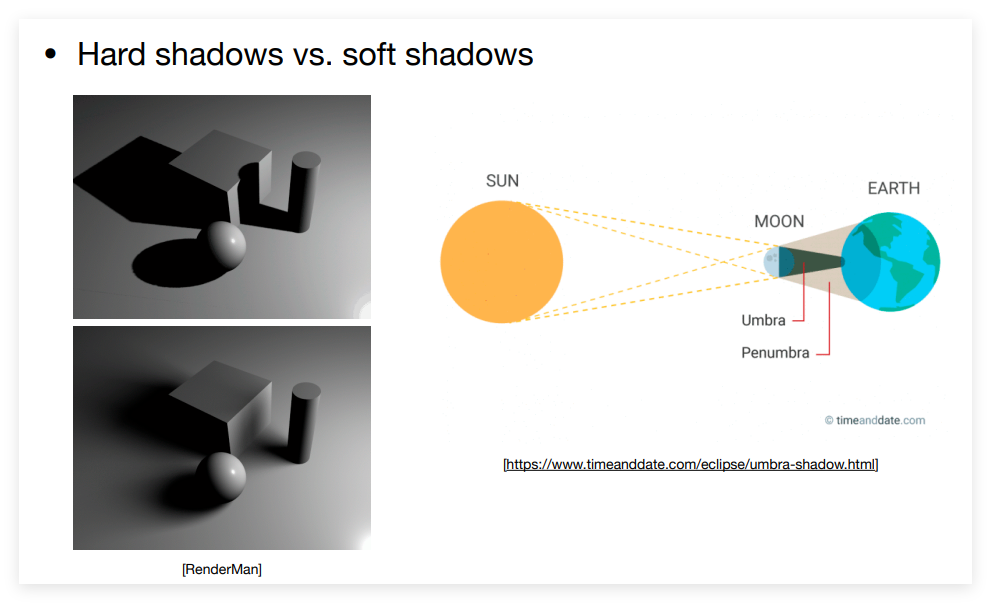
Whitted-Style Ray Tracing 在图形学中，我们定义光线有以下属性：
<1> 光线沿直线传播 <2> 光线之间不发生碰撞 <3> 光线从光源传播到相机 根据光路的可逆性，我们可以假设光从我们的相机出发，经过不断投射到达光源。
相机发出的光可以经过多次反射或折射，在到达的每一个点都判断一次与光源的距离和角度关系，分别计算着色值，最后相加：
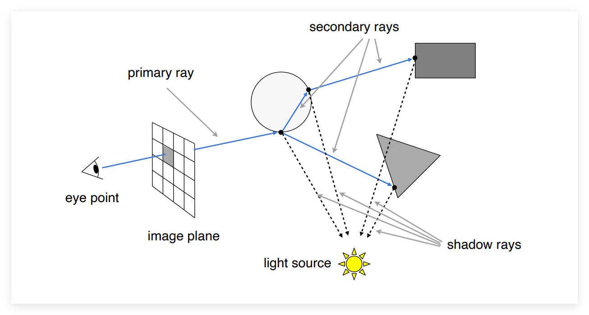
Ray-object Intersection 光线由起点 \(o\) 和传播方向 \(d\) 定义：
\[ r(t)=o+td,\ 0\le t\lt \infty \]
一个球面由球心 \(c\) 和半径 \(R\) 定义：
\[ p:\ (p-c)^2 -R^2 =0 \]
那么光线和球的交点必须同时满足以上两个方程：
\[\begin{array}l (o+td-c)^2 -R^2=0 \\ at^2 +bt+c=0, where \\ a=d\cdot d \\ b= 2(o-c)\cdot d \\ c=(o-c)\cdot (o-c)-R^2 \end{array}\]
将其推广到一般隐式表面 \(f(p)=0\) ：
\[ f(o+td)=0 \]
对于显式表面 ，如 Triangle Mesh，可以将每个三角形都与光线方程作判断，但是可想而知计算量是非常大的。
为简化计算，可以先求出光线和三角形平面的交点，再判断该交点是否处于三角形内。
一个平面由其上一点 \(p'\) 和其法线 \(N\) 定义：
\[ p:\ (p-p')\cdot N=0\ \Rightarrow \ ax+by+cz+d=0 \]
那么将光线方程带入求交点：
\[ (o+td-p')\cdot N=0 \Rightarrow t=\frac{(p'-o)\cdot N}{d\cdot N} \]
而判断交点是否处于三角形内在光栅化章节中已学过，此处不再展示。（分别于三角形三条边叉乘）
Moller Trumbore Algorithm 可以通过重心坐标一步到位判断三角形与光线的交点：
\[ \begin{array}c O+tD=(1-b_1 -b_2)P_0 +b_1 P_1 +b_2 P_2 \\ \left [ \begin{matrix} t \\ b_1 \\ b_2\end{matrix}\right ] = \frac{1}{S_1\cdot E_1} \left [ \begin{matrix} S_2 \cdot E_2 \\ S_1 \cdot S \\ S_2 \cdot D \end{matrix}\right ] \end{array} \]
其中：
\[\begin{array}c \overrightarrow{E_1}=P_1 -P_0 \\ \overrightarrow{E_2}=P_2 -P_0 \\ \overrightarrow{S} =O-P_0 \\ \overrightarrow{S_1} =D\times E_2 \\ \overrightarrow{S_2} = S\times E_1 \end{array}\]
C++ 实现：
bool rayTriangleIntersect ( const Vector3f & v0 , const Vector3f & v1 , const Vector3f & v2 , const Vector3f & orig ,
const Vector3f & dir , float & tnear , float & u , float & v )
{
// Implement this function that tests whether the triangle
// that's specified bt v0, v1 and v2 intersects with the ray (whose
// origin is *orig* and direction is *dir*)
Vector3f E_1 = v1 - v0 ;
Vector3f E_2 = v2 - v0 ;
Vector3f S = orig - v0 ;
Vector3f S_1 = crossProduct ( dir , E_2 );
Vector3f S_2 = crossProduct ( S , E_1 );
float inv = 1 / dotProduct ( S_1 , E_1 );
tnear = dotProduct ( S_2 , E_2 ) * inv ;
u = dotProduct ( S_1 , S ) * inv ;
v = dotProduct ( S_2 , dir ) * inv ;
if ( u >= 0 && v >= 0 && u + v <= 1 && tnear >= 0 )
return true ;
return false ;
}
Bouding Volume 为了进一步提升光线和三角形表面求交的速度，我们引入包围盒的概念（or 包围体积）：我们将一个复杂图形包围在包围盒内，如果光线不能命中包围盒，那光线也一定不能命中盒内的表面。
在三维空间中，我们通常使用轴对齐包围盒作为 BOX，它通常是由三对平面形成的交集，且每对平面都与 \(XY\) 或 \(YZ\) 或 \(XZ\) 平面平行。
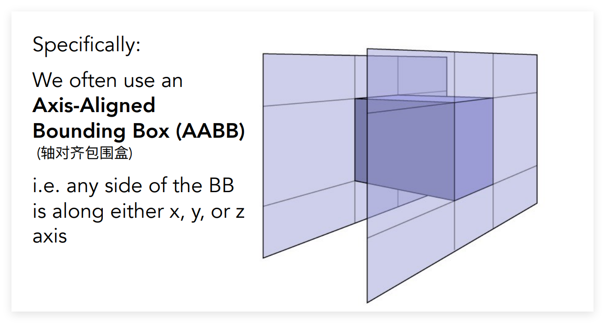
我们以二维的 Axis-Aligned Bounding Box 为例：
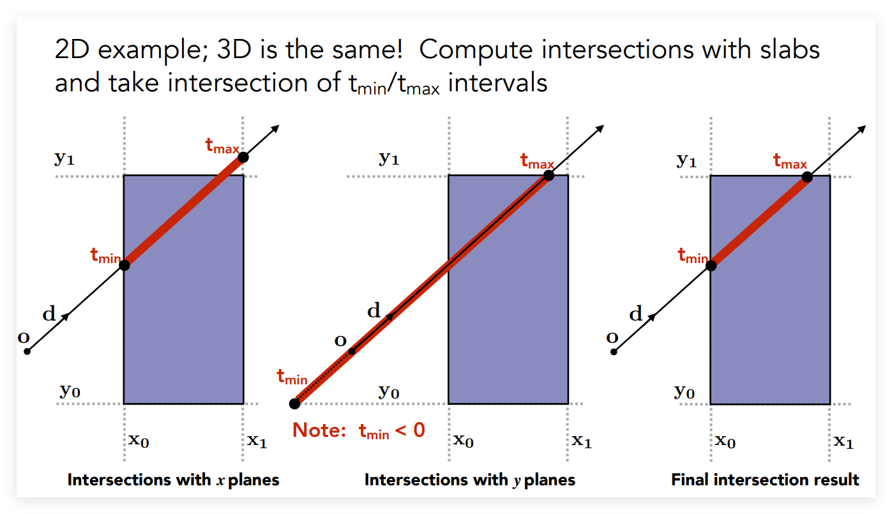
对每一对平面计算光线进入和出去的时间，则最后光线在 BOX 内的时间为时间的交集。
Key Ideas The ray enters the box only when it enters all pairs of slabs The ray exits the bos only when it exists any pair of slabs \[ t_{enter}=\max \{t_{min}\}, t_{exit}=\min \{t_{max}\} \]
不过由于光线并不是一条直线，而是射线，我们通过对进入和离开时间的正负值判断即可得到是否有交点：
If \(t_{exit}\lt 0\) 盒子在光线后面 - no intersection If \(t_{exit} \ge 0,t_{enter} \lt 0\) 光线起点在盒子内部 - have intersection 即有交点的条件当且仅当 \(t_{enter} \lt t_{exit}\ \&\&\ t_{exit} \ge 0\)
/*
采用两个点表示 BoundingBox，分别为 pmin 和 pmax
*/
inline bool Bounds3::IntersectP ( const Ray & ray , const Vector3f & invDir ,
const std :: array < int , 3 >& dirIsNeg ) const
{
// invDir: ray direction(x,y,z), invDir=(1.0/x,1.0/y,1.0/z), use this because Multiply is faster that Division
// 这里假设 v=\sqrt{x^2+y^2+z^2}，则 v_x = x，那么就能明白 invDir 的用处了
// dirIsNeg: ray direction(x,y,z), dirIsNeg=[int(x>0),int(y>0),int(z>0)], use this to simplify your logic
// TODO test if ray bound intersects
double t1 = 0 , t2 = 0 , tmin = 0 , tmax = 0 ;
t1 = ( pMin . x - ray . origin . x ) * invDir . x ;
t2 = ( pMax . x - ray . origin . x ) * invDir . x ;
tmin = ( dirIsNeg [ 0 ] > 0 ) ? t1 : t2 ;
tmax = ( dirIsNeg [ 0 ] > 0 ) ? t2 : t1 ;
t1 = ( pMin . y - ray . origin . y ) * invDir . y ;
t2 = ( pMax . y - ray . origin . y ) * invDir . y ;
tmin = std :: max ( tmin , ( dirIsNeg [ 1 ] > 0 ) ? t1 : t2 );
tmax = std :: min ( tmax , ( dirIsNeg [ 1 ] > 0 ) ? t2 : t1 );
t1 = ( pMin . z - ray . origin . z ) * invDir . z ;
t2 = ( pMax . z - ray . origin . z ) * invDir . z ;
tmin = std :: max ( tmin , ( dirIsNeg [ 2 ] > 0 ) ? t1 : t2 );
tmax = std :: min ( tmax , ( dirIsNeg [ 2 ] > 0 ) ? t2 : t1 );
if ( tmin < tmax && tmax >= 0 ) return true ;
else return false ;
}
在实践中，我们将包围盒划分成一个个小格子，并对其进行预处理，判断某一格子内是否有物体表面存在。
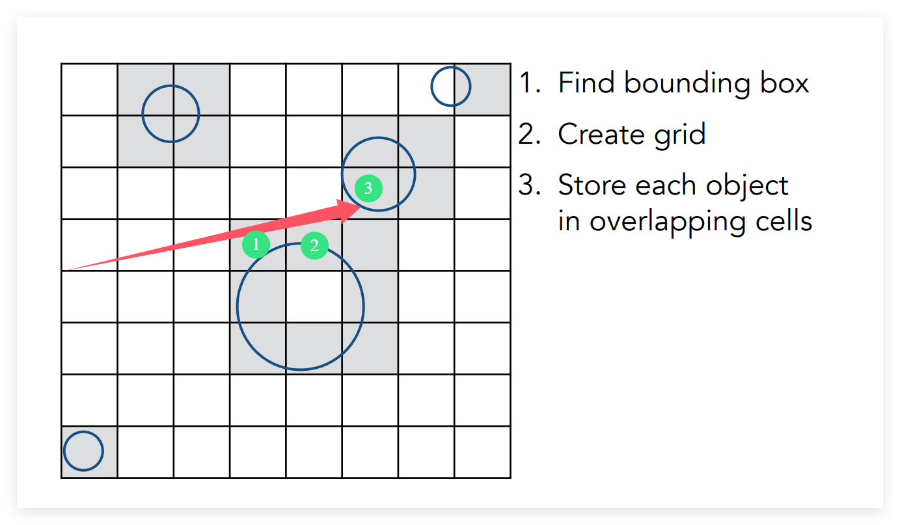
在光线射入的过程中，如果射入的该格子内不存在表面，则可以直接略过；如果存在，则需要进行表面和光线的交点判断。
基本理论在于光线与盒子求交速度远大于光线与三角形面求交
同时，我们需要对划分的格子数也做一个平衡。在实际算法中：
\[ \begin{array}c \#cell =C* \#objs \\ C = 27\ \text{in 3D} \end{array} \]
Spatial Partitions 另一种方法是采用空间划分
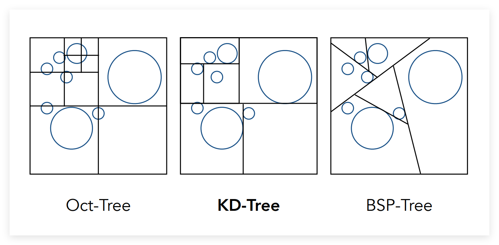
Oct Tree 八叉树 在空间中，将 Bounding Box 划分成等大八块，如果小块内有物体，则继续切成八块，不断递归；如果盒内为空，则不再划分。 KD Tree BSP Tree 与 KD Tree 略有不同，其划分方向上没有要求 所以给定一个场景，需要使用 KD Tree 预处理。
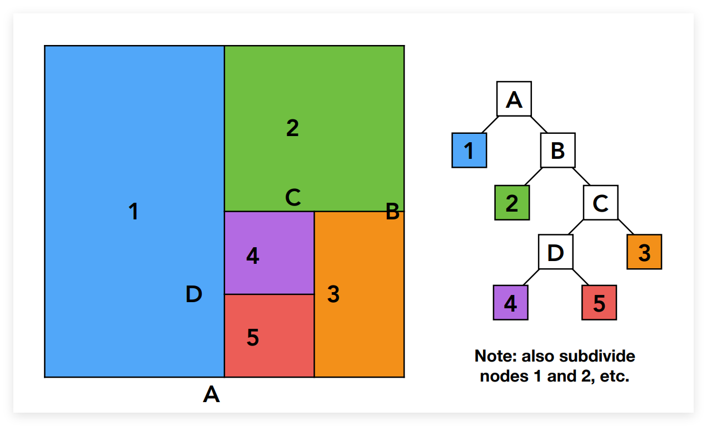
Object Partitions & BVH Bounding Volume Hierarchy(BVH ) 是非常广泛引用的加速结构，它解决了上述两个方案的缺点。
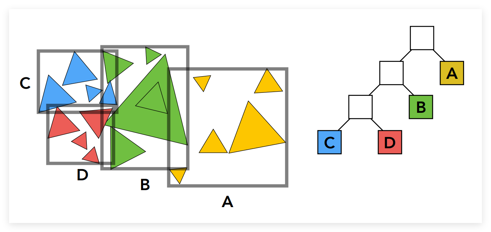
其思想为将物体划分为多个部分，对每部分求出它们的包围盒，这样每个包围盒都包含完整的物体(或面)，缺点是 Bounding Box 可能会存在重合部分。
How to subdivide a node ? Choose a dimension to split Heuristic 1 Always choose the longest axis in nodeHeuristic 2 Split node at location of median object Internal nodes store Bounding Box Pointers to child Leaf nodes store Bounding Box List of objects Accelerate Pros & Cons
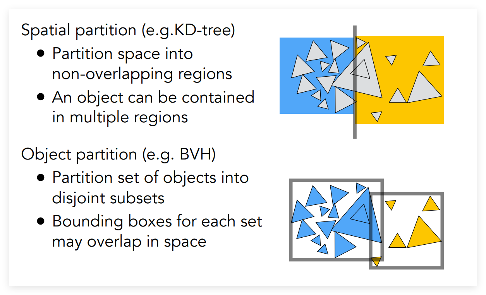
Basic Radiometry 尽管 Whitted-Style 光线追踪能够得到较好的结果，但是这个模型对于物理世界的模拟存在很多谬论，也就不可能得到真实世界的光线情况。
在辐射度量学中，光具有以下四个空间属性：
Radiant Flux 辐射通量Intensity 光照强度Irradiance 辐射照度Radiance 辐射亮度 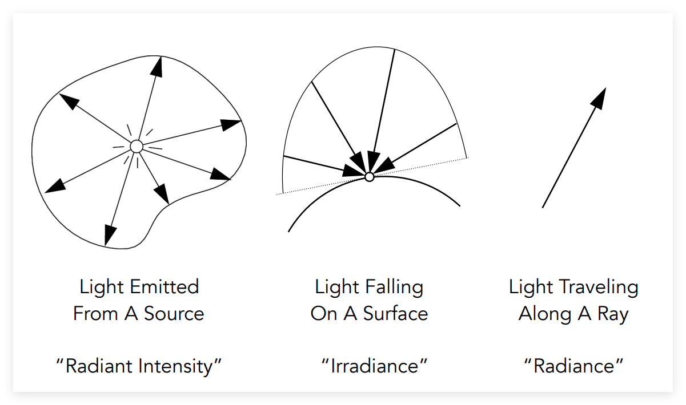
Radiant Flux Radiant Energy 是电磁辐射的能量，但是在图形学中并不常用。而 Radiant Flux 是单位时间内 emitted,reflected,transmitted, or received 的能量，即 energy per unit：
\[\begin{array}cQ[J=Joule] \\ \Phi = \frac{dQ}{dt}[W=Watt][lm=lumen] \end{array}\]
Intensity 定义 Radiant Intensity 为 power per unit solid angle emitted by a point light source.
\[I(\omega) = \frac{d\Phi}{d\omega}[\frac{W}{sr}][\frac{lm}{sr}=cd=candla]\]
其中立体角 Solid Angle 为面积除以半径平方，那么整个球的立体角为 \(4\pi\)
\[d\omega = \frac{dA}{r^2}=\sin \theta d\theta d\phi \]
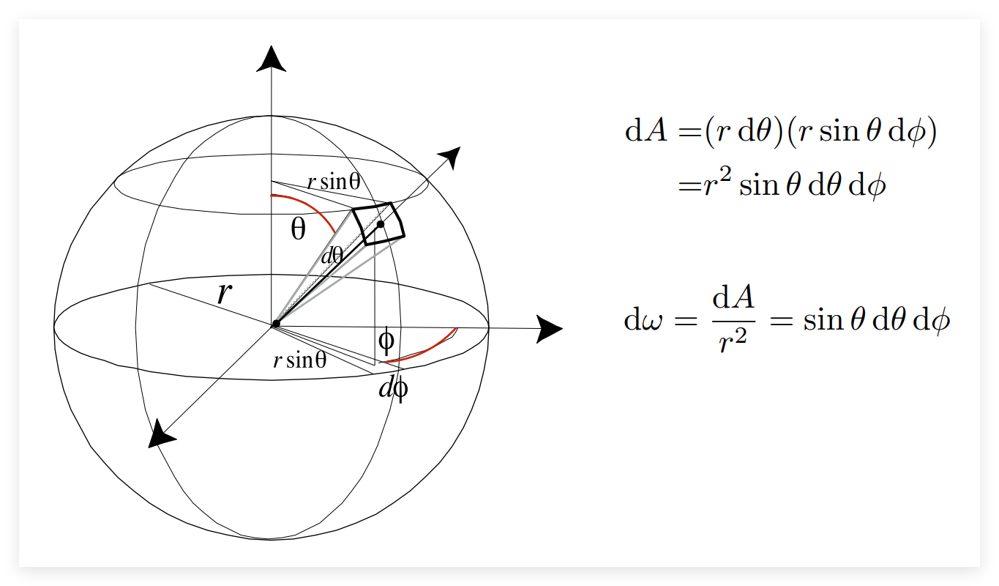
Irradiance 定义 Irradiance 为 power per unit area incident on a surface point.
\[E(x)= \frac{d\Phi (x)}{dA}[\frac{W}{m^2}][ \frac{lm}{m^2}=lux]\]
此时再回过头去看着色模型中的 Lambert's Cosine Law：
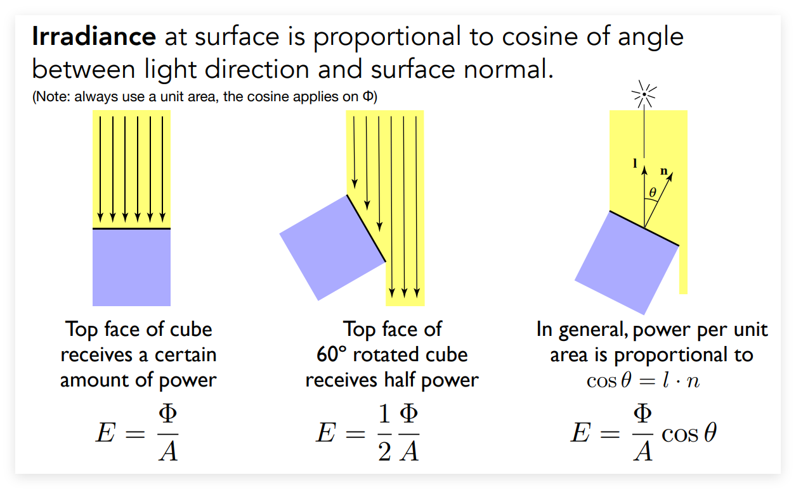
Radiance 定义 Radiance 为 power per unit solid angle, per projected unit area，即一个微小的面，向一个微小的方向射出的能量：
\[L(p,\omega)= \frac{d^2 \Phi (p,\omega)}{d\omega dA \cos \theta}[nit]\]
Radiance 用来描述光线，而光线追踪就是计算 radiance。
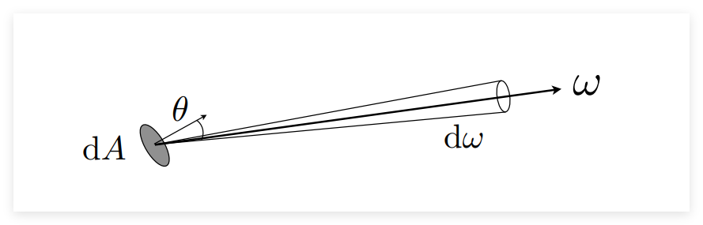
我们可以将 Radiance 和前面两个基本属性联系起来：
Radiance： Irradiance pre solid angle \(L(p,\omega) = \frac{dE(p)}{d\omega \cos \theta}\) Radiance： Intensity per projected unit area \(L(p,\omega)=\frac{dI(p,\omega)}{dA\cos \theta}\) 其中，Irradiance 和 Radiance 的关系尤为重要。
Irradiance 是单位面积 \(dA\) 接受到的能量总和，而 Radiance 是从单位立体角射到 \(dA\) 的能量：
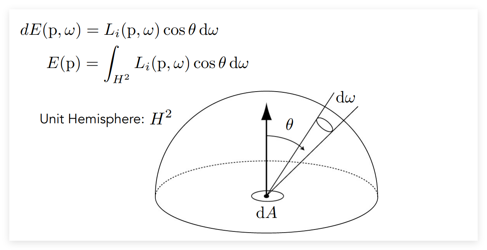
Bidirectional Reflectance Distribution Function 双向反射分布函数(BRDF)用来解决已知入射光能量和角度，求射到物体表面向各个方向辐射出去的能量和角度。
我们假设物体表面并不是直接反射光线，而是将光线能量吸收，再重新发射出去，则对于一单位面积，其用来决定入射方向为 \(\omega_i\) 的光线能量和出射方向为 \(\omega_r\) 的光线关系的BRDF函数为：
\[ f_r (\omega _i \rightarrow \omega _r) =\frac{dL_r(\omega _r)}{dE_i( \omega _i)} = \frac{dL_r(\omega _r)}{L_i(\omega _i)\cos \theta_i d\omega_i} \]
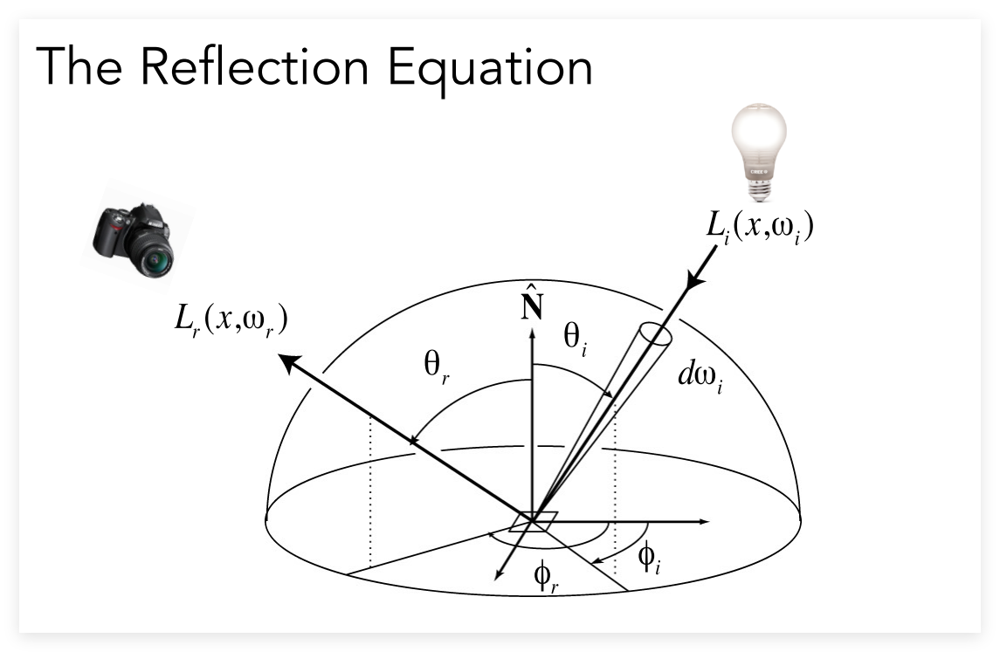
那么，对入射方向进行一次积分，可到到该出射方向的光线：
\[ \Rightarrow L_r (p,\omega_r)=\int _{H^2} f_r (p,\omega _r) L_i (p,\omega _i) \cos \theta _i d\omega _i \]
\(L_e(p,\omega_0)\) 是物体本身的光。不发光则为 0
再考虑到物体本身可能存在的发光，最终可以得到更一般化的渲染方程：
\[ \Rightarrow L_o (p,\omega_o)=L_e(p,\omega_o) + \int _{\Omega ^+} f_r (p, \omega_i, \omega _o) L_i (p,\omega _i) (n\cdot \omega_i) d\omega _i \]
但是实际渲染中，光线从多个方向射入，使得上述积分难以计算。在此，我们不深入证明的给出全局光照的方程：
\[ L=E+KE +K^2E +K^3E+... \]
\(E\) 就代表直接从光源发出的光，\(KE\) 表示直接光照，即光照射到表面后反射一次的光照，相应的 \(K^nE\) 表示光弹射 n 次后的光照。
蒙特卡洛积分 & 路径追踪 蒙特卡洛积分通过采样的方式计算一个定积分。
我们在积分范围 \([a,b]\) 内取一随机变量 \(X_i \sim p(x)\) ，则其定积分估计值为：
\[ \int _a^b f(x)dx =F_N= \frac{1}{N}\sum _{i=1}^N \frac{f(X_i)}{ p(X_i)} \]
\(p(x)\) 指的是 PDF，概率密度函数（并非分布函数）
例如，我们取随机变量为 \(U(a,b)\) ，即均匀采样，则 \(p(x)=\frac{1}{b-a}\) :
\[ F_N = \frac{b-a}{N} \sum ^N_{i=1} f(X_i) \]
The more samples. the less varience 采样点越多，越近似 Sample on x, integrate on x 对谁采样就对谁积分 在 Whitted-Style Ray Tracing 中，我们假定光线的路径有以下两点性质：
<1> 光打到光滑表面时，会发生反射或折射 <2> 在漫反射面上停止反射 但是实际上这种简化理解存在很多问题，如不能反映 Glossy 材质的反射性质、漫反射面需要将光沿各个方向散开等。
虽然 Whitted-Style Ray Tracing 是错误的，不过辐射度量学在物理上是正确的，即我们可以根据渲染方程来实现光线追踪。我们将尝试使用蒙特卡洛积分求解渲染方程。
\[\begin{array}l L_0(p, \omega _o) & =\int _{\Omega^+} L_i(p, \omega_i) f_r(p, \omega_i, \omega_o) (n\cdot \omega _i) d\omega _i \\ & =\frac{1}{N} \sum_{i=1} ^N \frac{L_i(o,\omega_i) f_r(p, \omega_i, \omega_o )( n\cdot \omega _i)}{ p(\omega_i)} \end{array} \]
shade ( p , wo ):
Randomly choose N directions wi ~ pdf
Lo = 0.0
for each wi :
Trace a ray r ( p , wi )
if ray r hit the light :
Lo += ( 1 / N ) * L_i * f_r * cosine / pdf ( wi )
else if ray r hit an object at position q :
Lo += ( 1 / N ) * shade ( q , - wi ) * f_r * cosine / pdf ( wi )
return Lo
但是上述实现有一个问题：光线在一个点上弹跳 N 次，递归次数太多，为超多项式级。为了解决这个问题，我们只能将弹跳次数设置为 1：
shade ( p , wo ):
Randomly choose 1 directions wi ~ pdf ( w )
Trace a ray r ( p , wi )
if ray r hit the light :
Lo = L_i * f_r * cosine / pdf ( wi )
else if ray r hit an object at position q :
Lo = shade ( q , - wi ) * f_r * cosine / pdf ( wi )
return Lo
使用 \(N=1\) 作蒙特卡洛积分，这就叫做路径追踪(Path Tracing)
看起来 \(N=1\) 的结果似乎是非常 noisy 的，但实际上，对于我们屏幕上显示的一个像素，我们可以对其内部取多个采样点进行路径追踪，每一个采样点都取相机到该点的方向作为光线采样方向，最后得到的效果仍然不错：
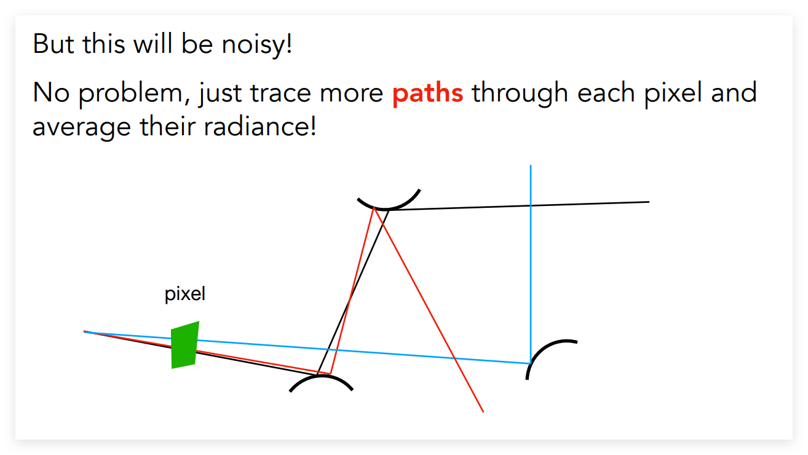
ray_generation ( camPos , pixel ):
Uniformly choose N sample positions within pixel
pixel_radience = 0.0
for each sample in the pixel
shoot a ray r ( camPos , cam_to_sample )
if ray r hit the scene at p
pixel_radience += 1 / N * shade ( p , sample_to_cam )
return pixel_radience
而对于 shade 函数，也需要设置一定的弹射次数防止递归层数太多。实际中使用的方法是俄罗斯轮盘赌(RR)：
手动设置一个概率 \(P\) 以一定概率 \(P\) 向某一方向发出一条光线，并将返回的 shade 值除以 \(P\) 以一定概率 \(1-P\) 不射出光线，则返回的 shade 值为 0 最终得到的期望值仍然是 \(Lo\) ！ \(E= P\cdot (Lo / P) + (1-P)\cdot 0=Lo\) shade ( p , wo )
Manually specify a probability P_RR
Randomly select a ksi in a uniform dist , in [ 0 , 1 ]
if ( ksi > P_RR ) return 0.0
Randomly choose 1 directions wi ~ pdf ( w )
Trace a ray r ( p , wi )
if ray r hit the light :
Lo = L_i * f_r * cosine / pdf ( wi ) / P_RR
else if ray r hit an object at position q :
Lo = shade ( q , - wi ) * f_r * cosine / pdf ( wi ) / P_RR
return Lo
问题在于，如果对一个像素内采样点取较少的话，可能会得到噪点非常多的结果；而取较多采样点，则又运行时间过慢。为了能够实现取较少采样点的同时得到优秀的结果，我们选择采样光源，避免出现均匀采样下光线打不中光源的情况，防止造成效率浪费。
其基本模型如下，我们希望对光源单位面积 \(dA\) 采样，并对 \(A\) 作积分。根据立体角定义，我们有 \(dA\) 和 \(d\omega\) 的关系：
\[ d\omega = \frac{dA\cos \theta '}{|x' -x|^2} \]
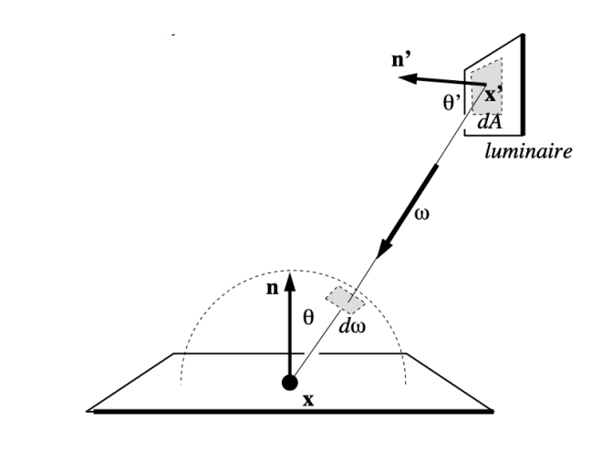
重写渲染方程为：
\[\begin{array}l L_0(x, \omega_o) & = \int _{\Omega^+}L_i(p, \omega_i) f_r(p, \omega_i, \omega_o) (n\cdot \omega _i) d\omega _i \\ & =\int _A L_i(x, \omega_i) f_r(x, \omega_i, \omega_o) \frac{\cos \theta \cos \theta '}{|x'-x|^2} dA \end{array}\]
对该渲染方程再使用蒙特卡洛积分，则 \(pdf=1/A\) ，步骤同上。
因此，我们考虑光线来自于光源和其它物体表面反射两部分：
Light source (Direct, no need to use RR)Other reflector (Indirect, RR)
Assignment 7中 C++ 的实现方式：
Vector3f Scene::shade ( Intersection & pos , const Vector3f & wo ) const
{
Vector3f L_dir ( 0 ), L_indir ( 0 );
// 直接光照
Intersection light ;
float light_pdf ;
sampleLight ( light , light_pdf );
Vector3f obj2light = light . coords - pos . coords ;
Vector3f obj2light_normalized = obj2light . normalized ();
auto t = intersect ( Ray ( pos . coords , obj2light_normalized ));
if ( t . distance + EPSILON > obj2light . norm ())
{ // 光线未被遮挡，EPSILON放宽精度防止自相交
Vector3f f_r = pos . m -> eval ( obj2light , wo , pos . normal );
float cos_theta = std :: max ( 0.0f , dotProduct ( pos . normal , obj2light_normalized ));
float cos_theta_prime = std :: max ( 0.0f , dotProduct ( light . normal , - obj2light_normalized ));
L_dir = light . emit * f_r * cos_theta * cos_theta_prime / ( obj2light . norm () * obj2light . norm ()) / light_pdf ;
}
// 间接光照
if ( get_random_float () < RussianRoulette )
{
Vector3f wi = pos . m -> sample ( wo , pos . normal );
Ray ray ( pos . coords , wi );
Intersection next_pos = intersect ( ray );
if ( next_pos . happened )
{
L_indir = shade ( next_pos , - wi );
Vector3f f_r = pos . m -> eval ( wi , wo , pos . normal );
float cos_theta = std :: max ( 0.0f , dotProduct ( pos . normal , wi ));
L_indir = L_indir * f_r * cos_theta * 2 * PI / RussianRoulette ;
}
}
return L_dir + L_indir ;
}
{kind=link}
{kind=link}
{kind=link}
{kind=link}
{kind=link}
{kind=link}
{kind=link}
{kind=link}
{kind=link}
{kind=link}
{kind=link}
{kind=link}
{kind=link}
{kind=link}
{kind=link}
{kind=link}
{kind=link}
{kind=link}